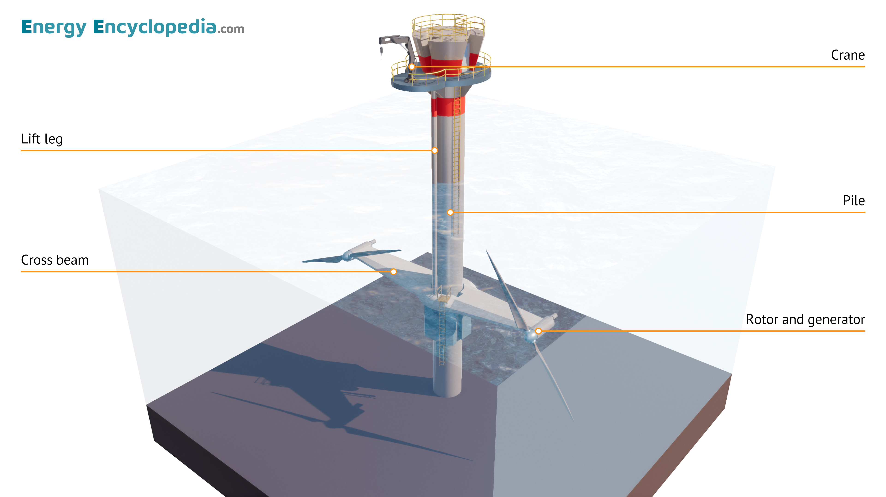
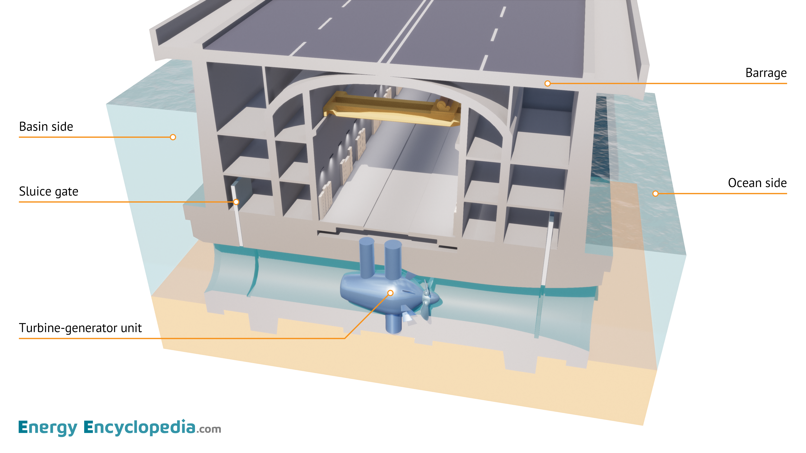
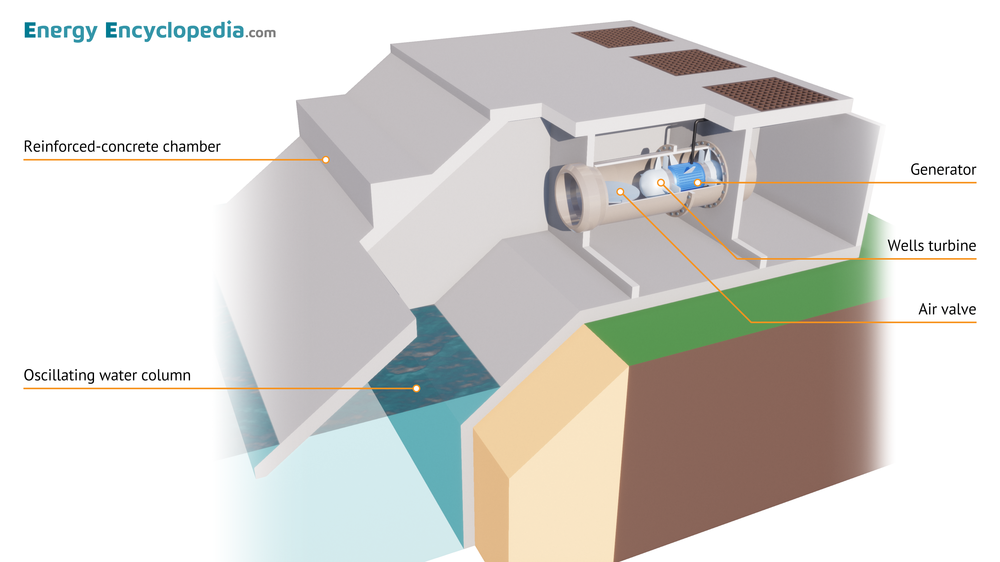

0806641562
Kittirach.in@rmuti.ac.th
Follow Us:
หน้าหลัก
คู่มือการใช้งาน
พลังงานหมุนเวียน
พลังงานน้ำ
พลังงานลม
พลังงานแสงอาทิตย์
พลังงานความร้อนใต้พิภพ
พลังงานชีวมวล
พลังงานน้ำ
หน้าหลัก
หลังงานหมนุเวียน
พลังงานน้ำ
โมเดล 3D จำลองพลังงานน้ำ
ภาพระบบผลิตพลังงานไฟฟ้าพร้อมเสียงประกอบ



วิดิโอเรียนรู้เพิ่มเติม
เบราว์เซอร์ของคุณไม่รองรับการเล่นวิดีโอ
เบราว์เซอร์ของคุณไม่รองรับการเล่นวิดีโอ
เบราว์เซอร์ของคุณไม่รองรับการเล่นวิดีโอ
©
Your Site Name
, All Right Reserved.
Designed By
HTML Codex